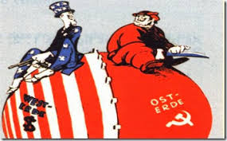
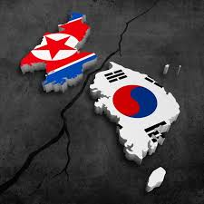

Los conflictos de la guerra de Corea iniciaron a principios del siglo XX cuando el Imperio Japonés invadió Corea y convirtió este territorio en una colonia japonesa. Este periodo sentó las bases para que más adelante el país quedara dividido.
Durante la ocupación, Japón había creado un sistema industrial al norte del Corea, con el que se aprovechaban de las minas de este sector y dejó la parte sur cómo el territorio libre para la agricultura. Además, obligó a los ciudadanos coreanos a trabajar en beneficio de la economía japonesa y los privó de la mayoría de los derechos humanos.
De esta forma, durante la Segunda Guerra Mundial, millones de soldados coreanos fueron enviados a las trincheras para luchar por la alianza del Eje, por lo que miles de soldados coreanos murieron durante la guerra.
Después de la caída de la bomba de Hiroshima, los Aliados y Japón firmaron un acuerdo de no agresión a cambio de la rendición del Imperio Japonés, pero en 1945, la Unión Soviética rompió este acuerdo y entró en las colonias japonesas, entre ellas la zona norte de Corea, en donde la fuerte industrialización había sembrado movimientos comunistas que apoyaban a la URSS.
Ante esto Estados Unidos pidió una desmilitarización de la zona y al encontrar una negativa por parte de la URSS, decidió enviar sus tropas a la parte sur del territorio coreano. Las tensiones de la Guerra Fría comenzaron a propiciar un inminente enfrentamiento para el que ninguno de los dos bandos estaba preparado, por lo que se decidió dividir el territorio.
Así se decidió utilizar el paralelo 38 para dividir a Corea en dos, una en donde la Unión Soviética tuviera el control y otra en donde fuera Estados Unidos quien gobernara, esto bajo la premisa de que el país no estaba listo para gobernarse solo pero esto solo era el inicio de la guerra de Corea y la separación definitiva de esta región.
En la parte norte, la ideología socialista comenzaba a tomar más fuerza gracias a Kim Il-sung, actualmente conocido como padre de la patria en Corea del Norte. Kim Il-sung había nacido en una familia con ideologías antijaponesas y desde muy joven fue enviado a China en donde comenzó su carrera en la política comunista.
Con el tiempo, después de haber pertenecido a diferentes guerrillas y luchar contra japón, su nombre comenzó a tomar popularidad por su constante lucha contra la invasión y fue elegido, con la ayuda de la Unión Soviética, jefe del comité popular provisional del norte de Corea.
Entre las políticas de Kim Il-sung para la recuperación de la nación estuvo la militarización del territorio norte y el establecimiento de la ideología comunista entre la sociedad. De esta forma, en 1950 Kim decidió dar inicio a la guerra de Corea al argumentar que Estados Unidos tenía invadida la zona sur del país.
Estados Unidos respondió mandando su armada y durante 3 años los ejércitos de Corea del Norte y Corea del Sur lucharon hasta que los surcoreanos, apoyados por el ejército estadounidense, lograron regresar a los norcoreanos a la parte del paralelo 38 que les correspondía.

El inicio de la guerra está marcado por lo que sucedió el 25 de junio de 1950 cuando las fuerzas de Corea del Norte cruzaron la frontera en la Operación Pokpoong (tormenta) e invadieron el sur, con la excusa de que habían sido atacados primero por soldados de corea del sur en la frontera. Pero la realidad es que ofensiva se había estado preparando durante meses.
La invasión tuvo éxito y Corea del Norte se hizo con Seúl capital de los Surcoreanos, aunque Rhee pudo escapar junto a su gobierno y el resto de sus tropas.
Contra dicha acción, el gobierno de Estados Unidos, a través de la ONU envía tropas para expulsar a los socialistas de la región del Sur de Corea y devolver el mando de Seúl a los surcoreanos.
Incluso bajo el riesgo inminente de causar una tercera guerra mundial, el socialismo y el capitalismo están de nuevo en guerra.
Los soldados norteamericanos siguen hacia la costa oeste dominado por los soviéticos y llegan a la capital Seúl sin mayores dificultades, gracias a su número superior, ciento cuarenta mil norteamericanos contra sesenta mil soviéticos. Siguiendo el ejemplo de los norcoreanos, el ejército avanza por el Paralelo 38º haciendo que el ejército soviético retroceda hasta llegar a su capital Pynogyang, dejando a sus enemigos enfurecidos.
El retroceso de las tropas norcoreanas llevó a las fuerzas surcoreanas y aliadas a sobrepasar la frontera del paralelo 38 y acorralar a las fuerzas norcoreanas en el norte de la Península. La posibilidad de la derrota de Corea del Norte dio como resultado el despliegue de tropas por China.
La interferencia china en ese conflicto se produjo por el temor del gobierno chino de que una victoria de los estadounidenses llevara a una invasión del territorio chino.
China, sin embargo, al sentirse amenazada envía más de trescientos mil soldados en apoyo a Corea del Norte entrando oficialmente en la guerra. China a ejemplo de los estadounidenses hacen que el ejército opositor retrocede y conquista nuevamente la capital de Corea del Sur, Seúl, el cuatro de enero de 1951.
Los norteamericanos avanzan de nuevo haciendo que los soviéticos retrocedan y mantengan el paralelo 38, manteniendo las fuerzas en un nivel estable y extendiendo el conflicto por los dos años siguientes.

En julio de 1953, el gobierno norteamericano amenazó con usar armas nucleares contra Corea del Norte y China si la guerra no fuera finalizada con la rendición norcoreana y firmaran un acuerdo.
China, amenazada, desiste y el ejército norcoreano se rinde finalizando la guerra.
Después de la rendición empezaron las negociaciones. Los muchos conflictos en territorio coreano provocaron la muerte de cerca de cuatro millones de personas, en su mayoría civiles.